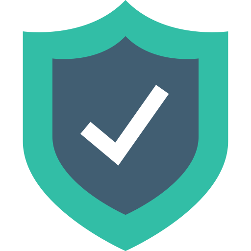

امـنـیـت رایـانـه
برای فعالان مدنی و روزنامهنگاران
{ امنیت رایانه }
ایرانسک
IranSecurity
IranSec
IranSec2
این محتوا با و تحت گواهی منتشر میشود (بیشتر بخوانید)

راههایی ساده برای افزایش امنیت رایانه شخصی
پاییز ۱۴۰۲چند نکته کلی
- دستگاه و نرمافزارهای خود را بهروز نگه دارید.
- برای دستگاه خود، از رمز قوی استفاده کنید.
- یک حساب کاربری استاندارد برای استفاده روزمره ایجاد کنید تا خطر دسترسی بدافزارها به سیستم را کاهش دهید.
- نرمافزارها را از منابع معتبر دانلود و نصب کنید.
- تا حد امکان از نصب نرمافزارهای سوم شخص (Third Party) جلوگیری کنید.
- از استفاده از شبکههای وایفای عمومی برای فعالیتهای حساس پرهیز کنید.
- بهطور منظم اطلاعات مهم خود را با یک منبع خارجی یا خدمات ابری پشتیبانگیری کنید. این کار اطمینان حاصل میکند که اگر دستگاه خود گم شود یا تخریب شود، میتوانید اطلاعات خود را بازیابی کنید.
- از یک برنامه آنتیویروس یا امنیتی معتبر استفاده کنید.
فعالسازی Windows Defender در ویندوز ۱۰ و ۱۱
وارد تنظیمات شده و روی Update & Security کلیک کنید.
از منوی سمت چپ وارد Windows Security شوید و دکمه Open Windows Security را بزنید.
وارد Virus & Threat Protection شوید و روی Manage Settings کلیک کنید.
کلید Real-time protection, cloud-delivered protection, automatic sample submission و tamper protection را روشن کنید.
وارد Firewall and Network protection شوید.
وارد Domain Network شوید و کلید Microsoft Defender Firewall را روشن کنید.
به Firewall and Network protection برگردید و وارد Private Network شوید و کلید Microsoft Defender Firewall را روشن کنید.
دوباره به Firewall and Network protection برگردید و وارد Public Network شوید و کلید Microsoft Defender Firewall را روشن کنید.
وارد App & Browser Control شوید و روی Reputation-based protection settings کلیک کنید.
کلیدهای Check apps and files، SmartScreen for Microsoft Edge، Potentially unwanted app blocking و SmartScreen for Microsoft Store apps را روشن کنید.
فعالسازی Bitlocker در ویندوز ۱۱
منبع عکسها: https://www.windowscentral.com
در تنظیمات، از منوی سمت چپ وارد System و سپس وارد Storage شوید.
روی Advanced storage settings کلیک کنید و وارد Disks & volumes شوید.
درایوی که میخواهید رمزگذاری کنید را انتخاب و روی دکمه Properties در کنار آن کلیک کنید.
روی Turn on BitLocker کلیک کنید.
دوباره روی Turn on BitLocker کلیک کنید.
روش پشتیبانگیری کد بازیابی خود را انتخاب کنید. توجه کنید که شما همیشه میتوانید کد بازیابی را در حساب مایکروسافت خود پیدا کنید. همچنین، گزینه ذخیره انلاین تنها زمانی در دسترس است که حساب به یک حساب مایکروسافت متصل باشد.
دکمه Next را بزنید و گزینه Encrypt used disk space only را انتخاب کنید.
دکمه Next را بزنید و گزینه New encryption mode را انتخاب کنید.
تیک Run BitLocker system check را و سپس دکمه Continue را بزنید و اگر دستگاه نیاز به ریستارت شدن داشت، آن را ریستارت کنید تا مراحل تکمیل شود.
برای غیرفعالسازی رمزگذاری، وارد Control Panel شده و روی System and Security کلیک کنید. سپس روی BitLocker Drive Encryption کلیک کنید.
دکمه Turn off BitLocker را بزنید. دوباره Turn off BitLocker را بزنید.
نیاز به کمک دارید؟
پرسشهای خود را با ما در میان بگذارید. support@iransec.org t.me/IranSec_Botحق مولف و تشکر
این نوشته به واسطهی تجربهی چند ساله در ارائهی مشاورهی امنیتی به سازمانها و فعالان مدنی و حقوق بشر و روزنامهنگاران تهیه شده است. هر چند که تمام تلاشم را کردهام که متن حاضر بهروز و بینقص باشد، امکان ایراد وجود دارد پس با آغوش باز پذیرای نقدها و پیشنهادات شما هستم. لازم است یادآوری کنم که این جزوهی امنیتی با گواهی کریتو کامنز (قابل استفادهی غیر تجاری، تخصیص و سهم یکسان) منتشر شده است. به حتم برای هر شکل از استفادهی تجاری از این مجموعه نیاز به کسب اجازه دارید.
در این پروژهی آموزشی از محتوای دیگران با گواهی قابل انتشار و تغییر استفاده شده است. از آن جمله میتوان به ارائهگر reveal.js، قلمهای لالهزار و وزیر و بی-یکان، شکلکهای ion و awesome و flat icons استفاده شده. در هر جای پروژه که عکسی استفاده شده منبع آن ذکر شده است. اگر منبعی از قلم افتاده است خوشحال میشوم که آن را گوشزد کنید.